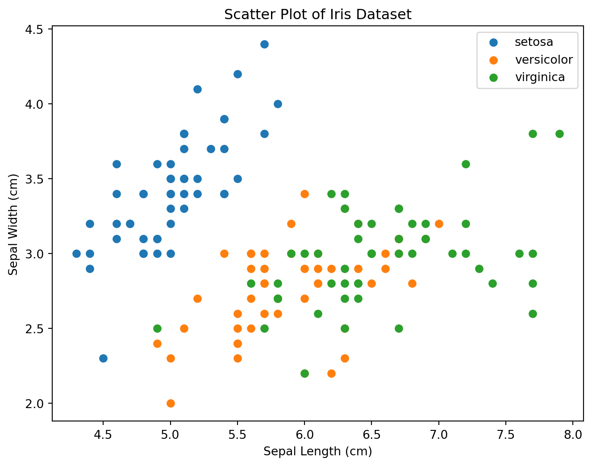

Classification is a type of supervised learning in machine learning where the goal is to predict the categorical class labels of new instances based on past observations. Here, I’ll provide a simple example using a popular dataset called the Iris dataset and the scikit-learn library in Python.
Why We Need Classification in Machine Learning.
In machine learning, classification is a type of supervised learning task where the goal is to categorize input data into predefined classes or categories. The key requirements and components for classification in machine learning include:
Labeled Data:
Classification requires a labeled dataset, where each example in the dataset is associated with a corresponding class label. This labeled data is used to train the classification model.
Features:
Features are the measurable properties or characteristics of the data that the model uses to make predictions. The choice and quality of features play a crucial role in the performance of a classification model.
Training Data:
A subset of the labeled data is used for training the classification model. During training, the model learns patterns and relationships between features and class labels.
Test Data:
Another subset of the labeled data, separate from the training data, is used to evaluate the performance of the trained model. This helps assess how well the model generalizes to unseen data.
Model Selection:
Choose a suitable classification algorithm or model. Common algorithms include decision trees, support vector machines, k-nearest neighbors, logistic regression, and neural networks. The choice of the algorithm depends on the characteristics of the data and the problem at hand.
Feature Preprocessing:
Preprocess and clean the data if necessary. This may involve handling missing values, normalizing or standardizing features, encoding categorical variables, and addressing other data quality issues.
Model Training:
Train the chosen classification model using the labeled training data. The model learns the underlying patterns in the data that map input features to the corresponding class labels.
Hyperparameter Tuning:
Fine-tune the model hyperparameters to optimize its performance. Hyperparameters are parameters that are not learned during training and must be set before training begins.
Model Evaluation:
Assess the performance of the trained model using the labeled test data. Common evaluation metrics for classification include accuracy, precision, recall, F1 score, and area under the ROC curve.
Deployment:
Once satisfied with the performance, deploy the trained model to make predictions on new, unseen data. The deployment environment may vary, such as web applications, mobile apps, or production systems.
Monitoring and Maintenance:
Continuously monitor the performance of the deployed model and update it as needed. This may involve retraining the model with new data to adapt to changing patterns.
These requirements and steps provide a general framework for building and deploying a classification model in machine learning. The specific details may vary depending on the dataset, problem domain, and chosen algorithms.
# Import necessary librariesfrom sklearn import datasetsfrom sklearn.model_selection import train_test_splitfrom sklearn.neighbors import KNeighborsClassifierfrom sklearn.metrics import accuracy_score, classification_reportimport matplotlib.pyplot as plt# Load the Iris datasetiris = datasets.load_iris()X = iris.data # Featuresy = iris.target # Target variable (class labels)# Split the dataset into training and testing setsX_train, X_test, y_train, y_test = train_test_split(X, y, test_size=0.6, random_state=42)# Create a k-Nearest Neighbors (k-NN) classifierknn = KNeighborsClassifier(n_neighbors=3)# Train the classifier on the training dataknn.fit(X_train, y_train)# Make predictions on the test datay_pred = knn.predict(X_test)# Evaluate the performance of the classifieraccuracy = accuracy_score(y_test, y_pred)print(f"Accuracy: {accuracy:.2f}")# Display classification reportreport = classification_report(y_test, y_pred, target_names=iris.target_names)print("Classification Report:\n", report)
K-Nearest Neighbors (KNN) is a simple and effective classification algorithm used in machine learning. It is a type of instance-based learning where the model makes predictions based on the majority class of the k-nearest data points in the feature space. Here’s how KNN works:
Initialization:
Store the entire training dataset.
Input Data:
Receive a new, unlabeled data point that you want to classify.
Calculate Distances:
Measure the distance between the input data point and every point in the training dataset. Common distance metrics include Euclidean distance, Manhattan distance, or other distance measures depending on the problem.
Identify Neighbors:
Identify the k-nearest data points (neighbors) to the input data point based on the calculated distances. These are the data points with the smallest distances to the input point.
Majority Vote:
Assign the class label to the input data point based on the majority class among its k-nearest neighbors. For example, if a majority of the neighbors belong to class A, the input data point is classified as class A.
Output Prediction:
The algorithm outputs the predicted class label for the input data point.
Parameters of KNN:
k (Number of Neighbors): The parameter “k” defines the number of neighbors considered when making a prediction. A small value of k (e.g., 1 or 3) may make the algorithm sensitive to noise, while a large value of k may smooth out local patterns.
Advantages of KNN:
Simple and easy to understand.
No training phase; the model directly uses the training data for predictions.
Non-parametric, meaning it doesn’t assume any specific form for the underlying data distribution.
Disadvantages of KNN:
Can be computationally expensive, especially for large datasets.
Sensitive to irrelevant or redundant features due to the curse of dimensionality.
Performance may degrade with high-dimensional data.
Considerations:
Normalization: Feature scaling is crucial for KNN because it relies on distance metrics. Normalizing or standardizing features ensures that all features contribute equally to the distance calculation.
Choosing the Right k: The choice of the parameter “k” can significantly impact the model’s performance. It’s often a good practice to experiment with different values of k and evaluate the model’s performance using validation data.
KNN is commonly used for small to medium-sized datasets, and its simplicity makes it a good baseline algorithm for classification tasks.
Here is the plot of the above data where x-axis shows Sepal Length and y-axis shows Sepal Width. In the code example provided earlier, a scatter plot is created using the Matplotlib library to visualize the Iris dataset based on sepal length and sepal width. Let’s break down the relevant parts of the code related to the plot. This scatter plot visually represents the distribution of the Iris dataset based on sepal length and sepal width. Each class is represented by a different color, and the legend indicates which color corresponds to each class. This type of visualization helps to understand the separation or overlap between classes in the feature space.
# Data Visualization: Scatter Plotplt.figure(figsize=(8, 6))for i inrange(3): indices = y == i plt.scatter(X[indices, 0], X[indices, 1], label=iris.target_names[i])plt.title("Scatter Plot of Iris Dataset")plt.xlabel("Sepal Length (cm)")plt.ylabel("Sepal Width (cm)")plt.legend()plt.show()

Another and a better way of visualization of classification is confusion matrix. A confusion matrix is a table used in classification to evaluate the performance of a machine learning model. It allows us to understand the accuracy and error types of a classification model by comparing the predicted labels to the true labels. The confusion matrix is particularly useful when dealing with binary or multiclass classification problems.
From this matrix, various performance metrics can be calculated: